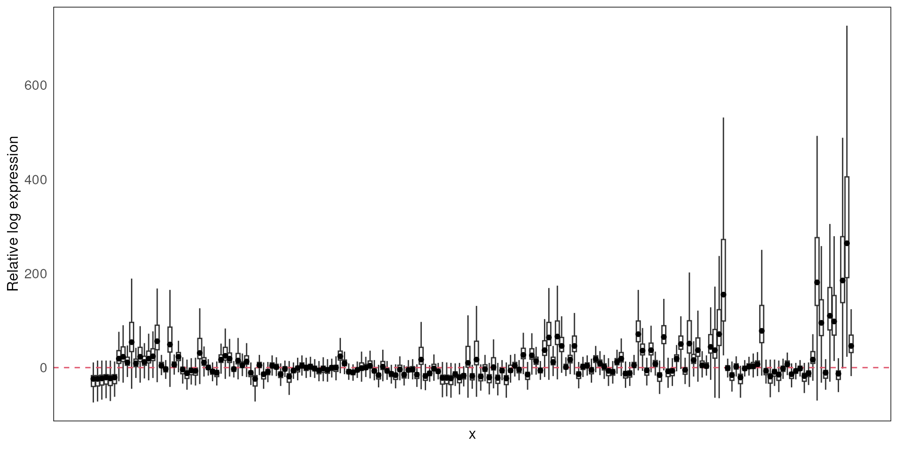
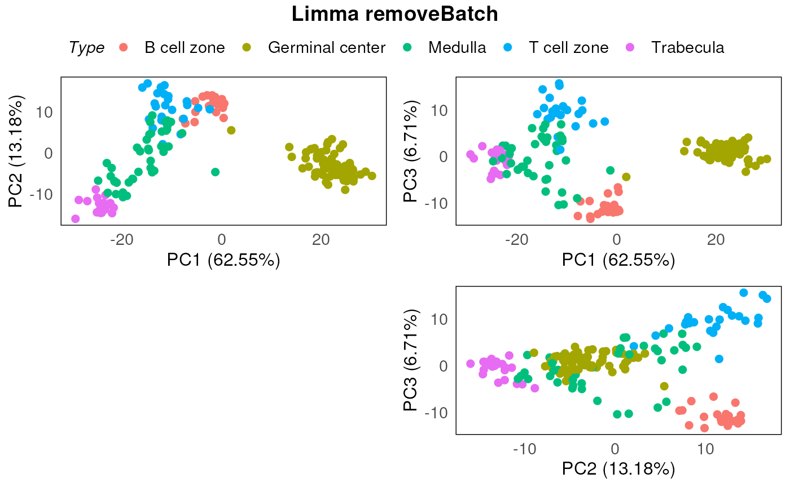

Analysing Nanostring’s GeoMX transcriptomics data using standR, limma and vissE
Ning Liu
Bioinformatics Division, Walter and Eliza Hall Institute of Medical Research, Parkville, VIC 3052, AustraliaDepartment of Medical Biology, University of Melbourne, Parkville, VIC 3010, Australialiu.n@wehi.edu.au
Chin Wee Tan
Bioinformatics Division, Walter and Eliza Hall Institute of Medical Research, Parkville, VIC 3052, AustraliaDepartment of Medical Biology, University of Melbourne, Parkville, VIC 3010, Australiacwtan@wehi.edu.au
Melissa J Davis
Bioinformatics Division, Walter and Eliza Hall Institute of Medical Research, Parkville, VIC 3052, AustraliaDepartment of Medical Biology, University of Melbourne, Parkville, VIC 3010, AustraliaDepartment of Biochemistry and Molecular Biology, Faculty of Medicine, Dentistry and Health Sciences, University of Melbourne, Parkville, VIC, 3010, Australiadavis.m@wehi.edu.au
Jun 2022
Source:vignettes/GeoMXAnalysisWorkflow.Rmd
GeoMXAnalysisWorkflow.RmdAbstract
Abstract
R version: R version 4.2.0 (2022-04-22)
Bioconductor version: 3.16
Introduction
A bioinformatics analysis of a GeoMX DSP dataset often starts with a
count table (genes by regions of interest (ROIs)), and ends by either
identifying differential expressed genes or performing gene
signature/gene-set scoring analysis in various conditions or
experimental designs. Nevertheless, before performing the differential
expression (DE) analysis or other downstream analysis that based on the
gene counts, proper quality control and normalisation of the data is
essential and can largely impact the validity of the DE and downstream
analysis’ results. We therefore developed a bioconductor package called
standR (Spatial
transcriptomics analyzes
and decoding in R) to
assist the QC, normalisation and batch correction of the GeoMX
transcriptomics data.
There are three major advantages of using the standR
package to analyse the GeoMX DSP datasets:
The package uses the
SpatialExperimentinfrastructure to analyse the data, this infrastructure is a lineage of theSummarisedExperimentfamily, which is highly recommended in the bioconductor community and compatible and transferable with many other highly developed packages in the RNA-seq analysis world, such asscater,scran,edgeRandlimma.The package features a comprehensive route of quality control, and provides various visualisation functions to help assessing different quality control metrics.
Batch effect is commonly seen in transcriptome dataset, especially in GeoMX DSP data due to the experimental design of slide usage, the package currently provides three batch correction methods that can remove the unwanted batch effect and provides statistics to assess the correction process.
In this workshop, we first use the standR to process a
published GeoMX WTA dataset in a workflow fashion. This will demonstrate
our recommended flow to process and analyse the GeoMX transcriptomics
data. Then, we will perform the DE analysis of the processed data using
the limma-voom pipeline, followed by a gene-set enrichment
analysis using fry and visualisation of the results using
vissE.
Processing and analysing GeoMX transcriptomics data with standR
Load data
Data we are using in this workshop is a published GeoMX whole transcriptome atlas (WTA) dataset of diabetic kidney disease (DKD).
In this dataset, Seven slides were analyzed, including 4 DKD and 3 healthy slides. ROIs were focused on two different parts of a kidney’s structure: tubules or glomeruli. Individual glomeruli were identified by a pathologist as either relatively healthy or diseased regardless if the tissue was DKD or healthy. Tubule ROIs were segmented into distal (PanCK) and proximal (neg) tubules. While both distal and proximal tubules are called tubules, they perform very different functions in the kidney.
This GeoMX DSP data can be retireved by querying the
ExperimentHub. The query below searches for all objects in
the hub associated with the search term “standR”. Here, Three files that
are associated with the DKD GeoMX data in the standR
package are retrieved.
library(ExperimentHub)
eh <- ExperimentHub()
query(eh, "standR")## ExperimentHub with 3 records
## # snapshotDate(): 2022-06-15
## # $dataprovider: Nanostring
## # $species: NA
## # $rdataclass: data.frame
## # additional mcols(): taxonomyid, genome, description,
## # coordinate_1_based, maintainer, rdatadateadded, preparerclass, tags,
## # rdatapath, sourceurl, sourcetype
## # retrieve records with, e.g., 'object[["EH7364"]]'
##
## title
## EH7364 | GeomxDKDdata_count
## EH7365 | GeomxDKDdata_sampleAnno
## EH7366 | GeomxDKDdata_featureAnno
countFile <- eh[["EH7364"]]
sampleAnnoFile <- eh[["EH7365"]]
featureAnnoFile <- eh[["EH7366"]]We can have a first glance at the format of the three files, they are the usual files we can obtain from the Nanostring.
The countFile is a tab-delimited file, it contains the
count table (features by samples) we generally see in transcriptomics
analysis.
read.delim(countFile, nrows = 5)[,1:3]## TargetName disease3_scan...001...PanCK disease3_scan...001...neg
## 1 PADI2 15 35
## 2 CYP24A1 23 32
## 3 SUPT16H 35 66
## 4 ZMIZ2 51 81
## 5 SPAG9 48 65The sampleAnnoFile is a tab-delimited file, contains all
the metadata of the samples.
read.delim(sampleAnnoFile, nrows = 5)[,1:5]## SlideName ScanName ROILabel SegmentLabel
## 1 disease3 disease3_scan 7 Geometric Segment
## 2 disease3 disease3_scan 8 Geometric Segment
## 3 disease3 disease3_scan 9 Geometric Segment
## 4 disease3 disease3_scan 10 Geometric Segment
## 5 disease3 disease3_scan 11 Geometric Segment
## SegmentDisplayName
## 1 disease3_scan | 007 | Geometric Segment
## 2 disease3_scan | 008 | Geometric Segment
## 3 disease3_scan | 009 | Geometric Segment
## 4 disease3_scan | 010 | Geometric Segment
## 5 disease3_scan | 011 | Geometric SegmentThe featureAnnoFile is a tab-delimited file, contains
all the metadata of the genes.
read.delim(featureAnnoFile, nrows = 5)## RTS_ID TargetName ProbeID Negative
## 1 RTS0020877 A2M 35614 FALSE
## 2 RTS0020878 NAT2 35615 FALSE
## 3 RTS0020879 ACADM 35616 FALSE
## 4 RTS0020880 ACADS 35617 FALSE
## 5 RTS0020881 ACAT1 35618 FALSEAs we described in the introduction, there are many advantages of using a mature infrastructure throughout out the analysis, such as being compatible with many other tools.
Hence, the first step in the standR package is to
construct a SpatialExperiment object that includes all the
information about the data. Here we can use the function
readGeoMX to do so. For more information about the
SpatialExperiment infrastructure, see here.
Notes: if you plan to use readGeoMx to construct
your SpatialExperiment object with your own data, make sure
that the files you use as inputs are tab-delimited files.
We can check out some basic informations about the dataset by typing the object directly. We can see that the dataset have 18503 genes and 231 ROIs.
spe## class: SpatialExperiment
## dim: 18503 231
## metadata(1): NegProbes
## assays(2): counts logcounts
## rownames(18503): PADI2 CYP24A1 ... FAM166A AGTPBP1
## rowData names(3): RTS_ID ProbeID Negative
## colnames(231): disease3_scan | 001 | PanCK disease3_scan | 001 | neg
## ... disease1B_scan | 023 | Geometric Segment disease1B_scan | 024 |
## Geometric Segment
## colData names(25): SlideName ScanName ... RoiReportY sample_id
## reducedDimNames(0):
## mainExpName: NULL
## altExpNames(0):
## spatialCoords names(2) : ROICoordinateX ROICoordinateY
## imgData names(0):In the spatialExperiment object, the raw count data is
stored in the counts assay slot, while the log-CPM (count
per million) of the data is calculated by default with the
readGeoMX function and stored in the logcounts
assay of the object.
assayNames(spe)## [1] "counts" "logcounts"We can have a look at the count table by using the assay
function and specify the table name.
assay(spe, "counts")[1:5,1:5]## disease3_scan | 001 | PanCK disease3_scan | 001 | neg
## PADI2 15 35
## CYP24A1 23 32
## SUPT16H 35 66
## ZMIZ2 51 81
## SPAG9 48 65
## disease3_scan | 002 | PanCK disease3_scan | 002 | neg
## PADI2 36 41
## CYP24A1 23 41
## SUPT16H 46 61
## ZMIZ2 87 113
## SPAG9 46 91
## disease3_scan | 003 | PanCK
## PADI2 9
## CYP24A1 3
## SUPT16H 20
## ZMIZ2 68
## SPAG9 25
assay(spe, "logcounts")[1:5,1:5]## disease3_scan | 001 | PanCK disease3_scan | 001 | neg
## PADI2 4.694722 5.097130
## CYP24A1 5.205348 4.988548
## SUPT16H 5.738537 5.903808
## ZMIZ2 6.236242 6.175525
## SPAG9 6.155076 5.883737
## disease3_scan | 002 | PanCK disease3_scan | 002 | neg
## PADI2 5.507768 5.054985
## CYP24A1 4.952999 5.054985
## SUPT16H 5.824568 5.551068
## ZMIZ2 6.679218 6.363792
## SPAG9 5.824568 6.073582
## disease3_scan | 003 | PanCK
## PADI2 4.573874
## CYP24A1 3.518078
## SUPT16H 5.538414
## ZMIZ2 7.183436
## SPAG9 5.827206Sample metadata is stored in the colData of the
object.
colData(spe)## DataFrame with 231 rows and 25 columns
## SlideName ScanName ROILabel
## <character> <character> <numeric>
## disease3_scan | 001 | PanCK disease3 disease3_scan 1
## disease3_scan | 001 | neg disease3 disease3_scan 1
## disease3_scan | 002 | PanCK disease3 disease3_scan 2
## disease3_scan | 002 | neg disease3 disease3_scan 2
## disease3_scan | 003 | PanCK disease3 disease3_scan 3
## ... ... ... ...
## disease1B_scan | 020 | Geometric Segment disease1B disease1B_scan 20
## disease1B_scan | 021 | Geometric Segment disease1B disease1B_scan 21
## disease1B_scan | 022 | Geometric Segment disease1B disease1B_scan 22
## disease1B_scan | 023 | Geometric Segment disease1B disease1B_scan 23
## disease1B_scan | 024 | Geometric Segment disease1B disease1B_scan 24
## SegmentLabel
## <character>
## disease3_scan | 001 | PanCK PanCK
## disease3_scan | 001 | neg neg
## disease3_scan | 002 | PanCK PanCK
## disease3_scan | 002 | neg neg
## disease3_scan | 003 | PanCK PanCK
## ... ...
## disease1B_scan | 020 | Geometric Segment Geometric Segment
## disease1B_scan | 021 | Geometric Segment Geometric Segment
## disease1B_scan | 022 | Geometric Segment Geometric Segment
## disease1B_scan | 023 | Geometric Segment Geometric Segment
## disease1B_scan | 024 | Geometric Segment Geometric Segment
## Sample_ID AOISurfaceArea
## <character> <numeric>
## disease3_scan | 001 | PanCK DSP-1001250007864-D-.. 22152.1
## disease3_scan | 001 | neg DSP-1001250007864-D-.. 71817.9
## disease3_scan | 002 | PanCK DSP-1001250007864-D-.. 37316.7
## disease3_scan | 002 | neg DSP-1001250007864-D-.. 102112.7
## disease3_scan | 003 | PanCK DSP-1001250007864-D-.. 18398.7
## ... ... ...
## disease1B_scan | 020 | Geometric Segment DSP-1001250007868-B-.. 34871.4
## disease1B_scan | 021 | Geometric Segment DSP-1001250007868-B-.. 29638.5
## disease1B_scan | 022 | Geometric Segment DSP-1001250007868-B-.. 24203.5
## disease1B_scan | 023 | Geometric Segment DSP-1001250007868-B-.. 24850.1
## disease1B_scan | 024 | Geometric Segment DSP-1001250007868-B-.. 22985.6
## AOINucleiCount ROICoordinateX
## <numeric> <numeric>
## disease3_scan | 001 | PanCK 183 23572
## disease3_scan | 001 | neg 421 23572
## disease3_scan | 002 | PanCK 323 22404
## disease3_scan | 002 | neg 565 22404
## disease3_scan | 003 | PanCK 162 26308
## ... ... ...
## disease1B_scan | 020 | Geometric Segment 185 28871
## disease1B_scan | 021 | Geometric Segment 167 28494
## disease1B_scan | 022 | Geometric Segment 145 32218
## disease1B_scan | 023 | Geometric Segment 162 32556
## disease1B_scan | 024 | Geometric Segment 126 15685
## ROICoordinateY RawReads TrimmedReads
## <numeric> <numeric> <numeric>
## disease3_scan | 001 | PanCK -39228 7485137 7423555
## disease3_scan | 001 | neg -39228 11365209 11264938
## disease3_scan | 002 | PanCK -47078 5764010 5716732
## disease3_scan | 002 | neg -47078 12870214 12767450
## disease3_scan | 003 | PanCK -51612 3411689 3382824
## ... ... ... ...
## disease1B_scan | 020 | Geometric Segment -20331 3596971 3532718
## disease1B_scan | 021 | Geometric Segment -20693 6624280 6501597
## disease1B_scan | 022 | Geometric Segment -31068 1274498 1246856
## disease1B_scan | 023 | Geometric Segment -30116 1762715 1733661
## disease1B_scan | 024 | Geometric Segment -13025 811601 796263
## StitchedReads AlignedReads
## <numeric> <numeric>
## disease3_scan | 001 | PanCK 7364647 6981003
## disease3_scan | 001 | neg 11163492 10486650
## disease3_scan | 002 | PanCK 5675008 5412997
## disease3_scan | 002 | neg 12672391 11929146
## disease3_scan | 003 | PanCK 3357777 3198844
## ... ... ...
## disease1B_scan | 020 | Geometric Segment 3480276 1969705
## disease1B_scan | 021 | Geometric Segment 6392274 2316137
## disease1B_scan | 022 | Geometric Segment 1225128 1160940
## disease1B_scan | 023 | Geometric Segment 1708493 1624815
## disease1B_scan | 024 | Geometric Segment 784340 741467
## DeduplicatedReads SequencingSaturation
## <numeric> <numeric>
## disease3_scan | 001 | PanCK 729971 90.2477
## disease3_scan | 001 | neg 1213754 89.3204
## disease3_scan | 002 | PanCK 898058 84.4196
## disease3_scan | 002 | neg 1471691 88.5651
## disease3_scan | 003 | PanCK 486670 85.7352
## ... ... ...
## disease1B_scan | 020 | Geometric Segment 39143 98.9118
## disease1B_scan | 021 | Geometric Segment 49662 99.2503
## disease1B_scan | 022 | Geometric Segment 24887 98.0473
## disease1B_scan | 023 | Geometric Segment 30385 98.2762
## disease1B_scan | 024 | Geometric Segment 19827 97.5571
## UMIQ30 RTSQ30 disease_status
## <numeric> <numeric> <character>
## disease3_scan | 001 | PanCK 0.9944 0.9937 DKD
## disease3_scan | 001 | neg 0.9943 0.9935 DKD
## disease3_scan | 002 | PanCK 0.9943 0.9936 DKD
## disease3_scan | 002 | neg 0.9945 0.9938 DKD
## disease3_scan | 003 | PanCK 0.9943 0.9937 DKD
## ... ... ... ...
## disease1B_scan | 020 | Geometric Segment 0.9870 0.9850 DKD
## disease1B_scan | 021 | Geometric Segment 0.9871 0.9852 DKD
## disease1B_scan | 022 | Geometric Segment 0.9856 0.9830 DKD
## disease1B_scan | 023 | Geometric Segment 0.9879 0.9861 DKD
## disease1B_scan | 024 | Geometric Segment 0.9872 0.9852 DKD
## pathology region LOQ
## <character> <character> <numeric>
## disease3_scan | 001 | PanCK NA tubule 36.2389
## disease3_scan | 001 | neg NA tubule 62.9229
## disease3_scan | 002 | PanCK NA tubule 42.6423
## disease3_scan | 002 | neg NA tubule 71.2849
## disease3_scan | 003 | PanCK NA tubule 19.6686
## ... ... ... ...
## disease1B_scan | 020 | Geometric Segment abnormal glomerulus 4.93200
## disease1B_scan | 021 | Geometric Segment abnormal glomerulus 5.70526
## disease1B_scan | 022 | Geometric Segment abnormal glomerulus 2.36403
## disease1B_scan | 023 | Geometric Segment abnormal glomerulus 2.82057
## disease1B_scan | 024 | Geometric Segment abnormal glomerulus 2.28887
## NormalizationFactor RoiReportX
## <numeric> <numeric>
## disease3_scan | 001 | PanCK 0.400861 4236
## disease3_scan | 001 | neg 0.246243 4236
## disease3_scan | 002 | PanCK 0.325227 3945
## disease3_scan | 002 | neg 0.202788 3945
## disease3_scan | 003 | PanCK 0.574567 4910
## ... ... ...
## disease1B_scan | 020 | Geometric Segment 5.74567 5496
## disease1B_scan | 021 | Geometric Segment 4.30925 5403
## disease1B_scan | 022 | Geometric Segment 8.61850 6336
## disease1B_scan | 023 | Geometric Segment 8.61850 6418
## disease1B_scan | 024 | Geometric Segment 8.61850 2202
## RoiReportY sample_id
## <numeric> <character>
## disease3_scan | 001 | PanCK -8628 sample01
## disease3_scan | 001 | neg -8628 sample01
## disease3_scan | 002 | PanCK -10603 sample01
## disease3_scan | 002 | neg -10603 sample01
## disease3_scan | 003 | PanCK -11731 sample01
## ... ... ...
## disease1B_scan | 020 | Geometric Segment -3866 sample01
## disease1B_scan | 021 | Geometric Segment -3958 sample01
## disease1B_scan | 022 | Geometric Segment -6550 sample01
## disease1B_scan | 023 | Geometric Segment -6304 sample01
## disease1B_scan | 024 | Geometric Segment -2039 sample01Gene metadata are stored in the rowData of the
object.
rowData(spe)## DataFrame with 18503 rows and 3 columns
## RTS_ID ProbeID Negative
## <character> <numeric> <logical>
## PADI2 RTS0051249 34691 FALSE
## CYP24A1 RTS0021490 36149 FALSE
## SUPT16H RTS0030451 44219 FALSE
## ZMIZ2 RTS0034986 48277 FALSE
## SPAG9 RTS0024185 38596 FALSE
## ... ... ... ...
## TMPRSS4 RTS0051782 35235 FALSE
## ATP6V0B RTS0028259 42276 FALSE
## DCHS1 RTS0028059 42092 FALSE
## FAM166A RTS0021731 36360 FALSE
## AGTPBP1 RTS0050106 35406 FALSEBy default, the readGeoMx function will remove the
negative probe, the one with name “NegProbe-WTX”, in the count table and
put it in the metadata of the object. User can turn this off by
specifying hasNegProbe = FALSE in the function.
metadata(spe)$NegProbes[1:5,1:5]## disease3_scan | 001 | PanCK disease3_scan | 001 | neg
## NegProbe-WTX 18.08935 34.26331
## NA NA NA
## NA.1 NA NA
## NA.2 NA NA
## NA.3 NA NA
## disease3_scan | 002 | PanCK disease3_scan | 002 | neg
## NegProbe-WTX 21.55552 40.01078
## NA NA NA
## NA.1 NA NA
## NA.2 NA NA
## NA.3 NA NA
## disease3_scan | 003 | PanCK
## NegProbe-WTX 8.992909
## NA NA
## NA.1 NA
## NA.2 NA
## NA.3 NAImport from DGEList object
Alternatively, standR provided a function to generate a
spatial experiment object from a DGEList object, which would be useful
for users who are familiar with the edgeR package.
dge <- edgeR::SE2DGEList(spe)
spe2 <- readGeoMxFromDGE(dge)
spe2## class: SpatialExperiment
## dim: 18503 231
## metadata(0):
## assays(2): counts logcounts
## rownames(18503): PADI2 CYP24A1 ... FAM166A AGTPBP1
## rowData names(3): RTS_ID ProbeID Negative
## colnames(231): disease3_scan | 001 | PanCK disease3_scan | 001 | neg
## ... disease1B_scan | 023 | Geometric Segment disease1B_scan | 024 |
## Geometric Segment
## colData names(28): group lib.size ... RoiReportY sample_id
## reducedDimNames(0):
## mainExpName: NULL
## altExpNames(0):
## spatialCoords names(0) :
## imgData names(0):Quality control
The quality control (QC) for the GeoMX transcriptome data are consisting of three major steps:
Inspection of the sample metadata: sample metadata can be seen as tabular-like format using the
colDatafunction, however here we aim to visualise the relations among important sample metadata, such as what slides did the ROI come from, which are the control groups and treatment groups, what are the pre-defined tissue types etc. By doing this step, we can have a general idea of some important question such as how the experiment was designed, should we be looking out for batch effect, and what interested comparison can be established.Gene level QC: at gene level, by default we aim at removing genes that are not expressed in more than 90% of the ROIs, and identifying any ROIs with only few genes that are expressed. This is the similar process as
edgeR::filterByExpr, as genes with consistently low counts are unlikely be identified as DE genes, and only keeping genes with sufficiently large counts in the DE analysis can increase statistical power while reduce multiple testing burden.ROI level QC: at ROI level, we aim at identify low-quality ROIs with relatively small library size (total feature count) and low cell count. Problematic ROIs that are not removed could show up as separate clusters in PCA/UMAPs and further affect the comparisons in DE analysis.
QC on sample information
To visualise sample metadata, we can use the
plotSampleInfo function. In this dataset, slides, diseases
status, tissue regions, and different subtypes of the tissues are the
important features that we could input into the function.
plotSampleInfo(spe, column2plot = c("SlideName","disease_status","region","SegmentLabel","pathology"))Based on the description of the data, we know that all glomerulus are classified as abnormal and healthy, and tubule are classified as neg and PanCK.
We therefore merge the region-related annotations to avoid collinearity, which can affect the process of batch correction.
colData(spe)$regions <- paste0(colData(spe)$region,"_",colData(spe)$SegmentLabel) %>%
gsub("_Geometric Segment","",.) %>%
paste0("_",colData(spe)$pathology) %>%
gsub("_NA","",.)
colData(spe)$regions %>% table()## .
## glomerulus_abnormal glomerulus_healthy tubule_neg tubule_PanCK
## 77 72 41 41Re-check the sample annotation, we can then have a better idea of the data and what comparisons we can establish.
plotSampleInfo(spe, column2plot = c("SlideName","disease_status","regions"))QC on genes
Using the addPerROIQC function, we can add key
statistics to the colData of the object. In this case,
argument rm_genes is set to TRUE, with the default settings
of min_count = 5 and sample_fraction = 0.9,
meaning here we first calculated a expression threshold on logCPM scale
(to account for library size differences), then genes that have
expression value below the threshold in more than 90% of the ROIs will
be removed. The count matrix with the removed gene are stored in the
metadata of the object, along with the calculated
expression threshold.
spe <- addPerROIQC(spe, rm_genes = TRUE)Here we can see that 121 genes are removed.
dim(spe)## [1] 18382 231
metadata(spe) |> names()## [1] "NegProbes" "lcpm_threshold" "genes_rm_rawCount"
## [4] "genes_rm_logCPM"Using the plotGeneQC function, we can have a look at
which were the genes removed and the overall distribution of percentage
of non-expressed genes in all ROIs. By default, top 9 genes are plotted
here (arranging by mean expression), user can increase the number of
plotted genes by changing the top_n parameter.
Moreover, users can order the samples (using parameter
ordannots) and color/shape the dots with annotation to find
out if these genes are specifically expressed in some samples (e.g. in
some tissue types or in some treatment group) so that we may need to
retain them.
plotGeneQC(spe, ordannots = "regions", col = regions, point_size = 2)
ROI level QC
Using the plotROIQC function, we are able to visualise
some QC statistics in the ROI level, such as library size and cell count
(AOINucleiCount) (the default settinngs for this function).
In the ROI level QC, we first aim to identify (if any) ROI(s) that have relatively low library size and low cell count because they are considered as low quality samples due to insufficient sequencing depth or lack of RNA in the chosen region.
In this case, looking at the distribution plots of library size and nuclei count, we don’t see any particular spike in the low ends, rather the distributions are relatively smooth. Looking at the dot plot, library sizes are mostly positively correlate with the nuclei count, with some data have relatively low library size while the nuclei count is reasonable. We therefore can try to draw an filtering threshold at the low end of the library size, in this case 50000. By coloring the dot with their slide names, we find that the ROIs below the threshold are all from slide disease1B, suggesting the reason for this might be some technical issues of slide disease1B.
plotROIQC(spe, y_threshold = 50000, col = SlideName)
Since library size of 50000 seems to be a reasonable threshold, here
we subset the spatial experiment object based on the library size in
colData.
Relative log expression distribution
We can use function plotRLExpr to visualise the relative
log expression (RLE) of the data to inspect the technical variation of
the data by looking at the distance from the median of the RLE (the
boxplot dot) to zero.
By default, we are plotting RLE of the raw count, where most of the variation are from library size differences.
plotRLExpr(spe)
Using assay = 2 to run RLE on the logCPM data, and we
can see that most technical variation from library sizes are removed.
And we can also sort the data using the annotation in the object by
specifying ordannots, with color or shape mapping parameter
as we usually write in ggplot, so that we can have a look at what factor
is heavily contributing to the technical variation.
Here we can see obvious variation from slides to slides, and small variations are also observed within each slide.
plotRLExpr(spe, ordannots = "SlideName", assay = 2, col = SlideName)
Dimension reduction
PCA
Using the drawPCA function, we can perform principal
component analysis (PCA) on the data. The PCA plot can help visualising
the variation (both biological and technical) in the data and finding
out which are the main factors contributing to the variations.
Here we color the PCA with slide information, and shape by regions (tissue). We can see that PC1 is mainly spread out by regions, especially glomerulus and tubule. And grouping based on slide within each tissue are observed. The subtypes in tubule are clearly separated, but different subtypes of glomerulus is still grouping together. Moreover, diseased tissues and control tissues are mixed as well (disease slides and normal slides).
drawPCA(spe, assay = 2, col = SlideName, shape = regions)
drawPCA(spe, assay = 2, col = disease_status, shape = regions)
The standR package also provide other functions to
visualise the PCA, including the PCA scree plot, pair-dimension PCA plot
and PCA bi-plot.
plotScreePCA(spe, assay = 2, dims = 10)
plotPairPCA(spe, col = disease_status,
shape = regions, assay = 2, n_dimension = 4)
plotPCAbiplot(spe, n_loadings = 10, assay = 2, col = regions)
MDS
plotMDS can be used to visualise the multidimension
scaling of the data.
standR::plotMDS(spe, assay = 2, color = disease_status, shape = regions)
UMAP
Further more, since we’re using SpatialExperiment as our
infrastructure, it is easy to use other popular packages such as the
scater package, which is commonly used in single cell data
and visium data analysis, we provide the function plotDR to
visualise any kinds of dimension reduction results generated from
scater::run*, such as UMAP, TSNE and NMF, by specifying
dimred.
Here we plot the UMAP of our data. Similar variation can be observed like PCA and MDS above.

Normalization
As we observed the technical variations in the data in both RLE and PCA plots. It is necessary to perform normalization in the data.
In the standR package, we offer normalization options
including TMM, RPKM, TPM, CPM, upperquartile and sizefactor. Among them,
RPKM and TPM required gene length information (add
genelength column to the rowData of the
object). For TMM, upperquartile and sizefactor, their normalized factor
will be stored their metadata.
Here we used TMM to normalize the data.
colData(spe)$biology <- paste0(colData(spe)$disease_status, "_", colData(spe)$regions)
spe_tmm <- geomxNorm(spe, method = "TMM")Then we use RLE and PCA plot to assess the normalization count.
The RLE plot show most of the median of RLE are close to zero, indicating that lots of technical variation are removed.
plotRLExpr(spe_tmm, assay = 2, color = SlideName) + ggtitle("TMM")
However, batch effect from the different slides are still observed, confounding the separation between disease and normal.
plotPairPCA(spe_tmm, assay = 2, color = disease_status, shape = regions)
Batch correction
In the Nanostring’s GeoMX DSP protocol, due to the fact that one slide is only big enough for a handful of tissue segments (ROIs), it is common that we see the DSP data being confounded by the batch effect introduced by different slides. In order to establish fair comparison between ROIs later on, it is necessary to remove this batch effect from the data.
In the standR package, we provide two approaches of
removing batch effects, including RUV4 and Limma.
Correction method : RUV4
To run RUV4 batch correction, we need to provide a list of “negative control genes (NCGs)”.
The function findNCGs allows identifying the NCGs from
the data. In this case, since the batch effect is mostly introduced by
slide, we therefore want to identify NCGs across all slides, so here we
set the batch_name to “SlideName”, and select the top 500
least variable genes across different slides as NCGs.
## [1] "NegProbes" "lcpm_threshold" "genes_rm_rawCount"
## [4] "genes_rm_logCPM" "NCGs"Now we can run RUV4 on the data using function
geomxBatchCorrection. By default this function will use
RUV4 to normalize the data. For RUV4 correction, the
function is requiring 3 parameters other than the input object,
including factors: the factor of interest, i.e. the
biological variation we plan to keep; NCGs: the list of
negative control genes detected using the function
findNCGs; and k: is the number of unwanted
factors to use, in the RUV documentation, it is suggest that we should
use the smallest k once we don’t observe technical variation in the
data.
Choosing the best k is one of the most important task when performing batch correction with RUV. And the best way to do so is to test out each k have a look with the corresponded diagnostic plot, such as PCA plot. The best k would be the smallest number that satisfy the separation of main biology on a PCA plot.
for(i in seq(5)){
spe_ruv <- geomxBatchCorrection(spe, factors = "biology",
NCGs = metadata(spe)$NCGs, k = i)
print(plotPairPCA(spe_ruv, assay = 2, n_dimension = 4, color = disease_status, shape = regions, title = paste0("k = ", i)))
}


Here we choose k = 4 to be our best k.
spe_ruv <- geomxBatchCorrection(spe, factors = "biology",
NCGs = metadata(spe)$NCGs, k = 4)
plotPairPCA(spe_ruv, assay = 2, color = disease_status, shape = regions, title = "RUV4, k = 4", n_dimension = 4)
Correction method: limma
Another option is set the parameter method to “Limma”,
which uses the remove batch correction method from limma.
In this mode, the function is requiring 2 parameters, including
batch: a vector that indicating batches for all samples;
and design: a design matrix which is generated by
model.matrix, in the design matrix, all
biologically-relevant factors should be included.
spe_lrb <- geomxBatchCorrection(spe,
batch = colData(spe)$SlideName, method = "Limma",
design = model.matrix(~ 0 + disease_status + regions,
data = colData(spe)))## Coefficients not estimable: batch6Again, using PCA to inspect the batch correction process.
plotPairPCA(spe_lrb, assay = 2, color = disease_status, shape = regions, title = "Limma removeBatch", n_dimension = 4)
Evaluation
Summary statistics
Besides looking at the PCA plots of normalized count, another way to
evaluate the batch correction is by summarising statistics such as
adjusted rand index, jaccard similarity coefficient, silhouette
coefficient and etc. We can do this by using the
plotClusterEvalStats function. In the biology section,
higher the score is better while in the batch section, lower is
better.
We can see that when it comes to stratifying for biology factors (disease status and tissue regions) or measuring batch clustering for this dataset, RUV4 outperform Limma in most statistics.
spe_list <- list(spe, spe_ruv, spe_lrb)
plotClusterEvalStats(spe_list = spe_list,
bio_feature_name = "regions",
batch_feature_name = "SlideName",
data_names = c("Raw","RUV4","Limma"))
RLE plots
Moreover, we can also have a look at the RLE plots of the normalized count to determine which batch correction performs better for this dataset.
We can clearly see that RUV4-corrected count have a overall more-closer-to-zero median RLE compared to the limma-corrected data. Therefore, in the downstream differential expression analysis, we would suggest using the RUV4 as the batch correction method for this specific dataset.
plotRLExpr(spe_ruv, assay = 2, color = SlideName) + ggtitle("RUV4")
plotRLExpr(spe_lrb, assay = 2, color = SlideName) + ggtitle("Limma removeBatch")Differential expression analysis with limma-voom pipeline
We recommend using comprehensive pipelines, such as
edgeR, limma-voom and DESeq2,
instead of simple T-test to perform DE analysis of GeoMX DSP data.
In this workshop, we’ll demonstrate the DE analysis using the
limma-voom pipeline.
Linear model
Since we’ve shown in previous sections that for this dataset, using
k = 4 is able to remove the batch effect and other undsired
technical variations. Here in the linear model, we need to include the
weight matrix generated from the function
geomxBatchCorrection as covariates. The weight matrix can
be found in the colData.
library(edgeR)
library(limma)
dge <- edgeR::SE2DGEList(spe_ruv)
design <- model.matrix(~0 + biology + ruv_W1 + ruv_W2 + ruv_W3 + ruv_W4, data = colData(spe_ruv))
colnames(design) <- colnames(design) %>%
str_replace("biology","")
colnames(design)## [1] "DKD_glomerulus_abnormal" "DKD_glomerulus_healthy"
## [3] "DKD_tubule_neg" "DKD_tubule_PanCK"
## [5] "normal_glomerulus_abnormal" "normal_glomerulus_healthy"
## [7] "normal_tubule_neg" "normal_tubule_PanCK"
## [9] "ruv_W1" "ruv_W2"
## [11] "ruv_W3" "ruv_W4"
keep <- filterByExpr(dge, design)
dge_all <- dge[keep, ]
dge_all <- estimateDisp(dge_all, design, robust=TRUE)Biological coefficient of variation
plotBCV(dge_all)
bcv_df <- data.frame(
'BCV' = sqrt(dge_all$tagwise.dispersion),
'AveLogCPM' = dge_all$AveLogCPM,
'gene_id' = rownames(dge_all)
)
highbcv <- bcv_df$AveLogCPM > 7 & bcv_df$BCV > 0.8
highbcv_df <- bcv_df[highbcv, ]
points(highbcv_df$AveLogCPM, highbcv_df$BCV, col = "red")
text(highbcv_df$AveLogCPM, highbcv_df$BCV, labels = highbcv_df$gene_id, pos = 4)
Differential expression
v <- voom(dge_all, design)
fit <- lmFit(v)
contr.matrix <- makeContrasts(
DvCinGab = DKD_glomerulus_abnormal - normal_glomerulus_abnormal,
levels = colnames(design))
fit_contrast <- contrasts.fit(fit, contrasts = contr.matrix)
efit <- eBayes(fit_contrast, robust = TRUE)
results_efit<- decideTests(efit, p.value = 0.05)
summary_efit <- summary(results_efit)Visualization
We can then visualise the DE genes using plots such as volcano plot and MA plot.
library(ggrepel)
library(tidyverse)
de_results_DvCinGab <- topTable(efit, coef = 1, sort.by = "P", n = Inf)
de_genes_toptable_DvCinGab <- topTable(efit, coef = 1, sort.by = "P", n = Inf, p.value = 0.05)
de_results_DvCinGab %>%
mutate(DE = ifelse(logFC > 0 & adj.P.Val <0.05, "UP",
ifelse(logFC <0 & adj.P.Val<0.05, "DOWN", "NOT DE"))) %>%
ggplot(aes(AveExpr, logFC, col = DE)) +
geom_point(shape = 1, size = 1) +
geom_text_repel(data = de_genes_toptable_DvCinGab %>%
mutate(DE = ifelse(logFC > 0 & adj.P.Val <0.05, "UP",
ifelse(logFC <0 & adj.P.Val<0.05, "DOWN", "NOT DE"))) %>%
rownames_to_column(), aes(label = rowname)) +
theme_bw() +
xlab("Average log-expression") +
ylab("Log-fold-change") +
ggtitle("DKD vs Normal in abnormal glomerulus (limma-voom)") +
scale_color_manual(values = c("blue","gray","red")) +
theme(text = element_text(size=15))
de_results_DvCinGab %>%
mutate(DE = ifelse(logFC > 0 & adj.P.Val <0.05, "UP",
ifelse(logFC <0 & adj.P.Val<0.05, "DOWN", "NOT DE"))) %>%
ggplot(aes(logFC, -log10(adj.P.Val), col = DE)) +
geom_point(shape = 1, size = 1) +
geom_text_repel(data = de_genes_toptable_DvCinGab %>%
mutate(DE = ifelse(logFC > 0 & adj.P.Val <0.05, "UP",
ifelse(logFC <0 & adj.P.Val<0.05, "DOWN", "NOT DE"))) %>%
rownames_to_column(), aes(label = rowname)) +
theme_bw() +
xlab("Fold change (log2)") +
ylab("-log10(p-value)") +
ggtitle("DKD vs Normal in abnormal glomerulus (limma-voom)") +
scale_color_manual(values = c("blue","gray","red")) +
theme(text = element_text(size=15))
updn_cols <- c(RColorBrewer::brewer.pal(6, 'Greens')[2], RColorBrewer::brewer.pal(6, 'Purples')[2])
de_genes_toptable_DvCinGab %>%
dplyr::select(c("logFC", "AveExpr", "P.Value", "adj.P.Val")) %>%
DT::datatable(caption = 'Differentially expressed genes. DKD vs Normal in abnormal glomerulus (limma-voom)') %>%
DT::formatStyle('logFC',
valueColumns = 'logFC',
backgroundColor = DT::styleInterval(0, rev(updn_cols))) %>%
DT::formatSignif(1:4, digits = 4)GSEA and visualisation with vissE
Here we try to do GSEA with the DE genes using limma fry. We select the following gene sets to conduct gene set enrichment analysis:
- MSigDB Hallmarks - genesets from the hallmarks collection of MSigDB
- MSigDB C2 - genesets from the C2 collection of MSigDB which contains curated genesets such as those obtained from databases such as BioCarta, KEGG, PID, and Reactome, and from chemical or genetic perturbation experiments
- GO BP - biological processes from the gene ontology database
- GO MF - molecular functions from the gene ontology database
- GO CC - cellular component from the gene ontolgoy database
FDR < 0.05 indicates significantly enriched gene set.
Load Gene sets
library(msigdb)
library(GSEABase)
msigdb_hs <- getMsigdb(version = '7.2')
msigdb_hs <- appendKEGG(msigdb_hs)
sc <- listSubCollections(msigdb_hs)
gsc <- c(subsetCollection(msigdb_hs, c('h')),
subsetCollection(msigdb_hs, 'c2', sc[grepl("^CP:",sc)]),
subsetCollection(msigdb_hs, 'c5', sc[grepl("^GO:",sc)])) %>%
GeneSetCollection()Enrichment analysis
fry_indices <- ids2indices(lapply(gsc, geneIds), rownames(v), remove.empty = FALSE)
names(fry_indices) <- sapply(gsc, setName)
gsc_category <- sapply(gsc, function(x) bcCategory(collectionType(x)))
gsc_category <- gsc_category[sapply(fry_indices, length) > 5]
gsc_subcategory <- sapply(gsc, function(x) bcSubCategory(collectionType(x)))
gsc_subcategory <- gsc_subcategory[sapply(fry_indices, length) > 5]
fry_indices <- fry_indices[sapply(fry_indices, length) > 5]
names(gsc_category) = names(gsc_subcategory) = names(fry_indices)
fry_indices_cat <- split(fry_indices, gsc_category[names(fry_indices)])
fry_res_out <- lapply(fry_indices_cat, function (x) {
limma::fry(v, index = x, design = design, contrast = contr.matrix[,1], robust = TRUE)
})
post_fry_format <- function(fry_output, gsc_category, gsc_subcategory){
names(fry_output) <- NULL
fry_output <- do.call(rbind, fry_output)
fry_output$GenesetName <- rownames(fry_output)
fry_output$GenesetCat <- gsc_category[rownames(fry_output)]
fry_output$GenesetSubCat <- gsc_subcategory[rownames(fry_output)]
return(fry_output)
}
fry_res_sig <- post_fry_format(fry_res_out, gsc_category, gsc_subcategory) %>%
as.data.frame() %>%
filter(FDR < 0.05) Visualization
To interpret the GSEA output, we can use the vissE
package to visualise the important enriched gene sets.
library(vissE)
library(igraph)
dovissE <- function(fry_out, de_table, topN = 6, title = "", specific_clusters = NA){
n_row = min(1000, nrow(fry_out))
gs_sig_name <- fry_out %>%
filter(FDR < 0.05) %>%
arrange(FDR) %>%
.[1:n_row,] %>%
rownames()
gsc_sig <- gsc[gs_sig_name,]
gs_ovlap <- computeMsigOverlap(gsc_sig, thresh = 0.15)
gs_ovnet <- computeMsigNetwork(gs_ovlap, gsc)
gs_stats <- -log10(fry_out[gs_sig_name,]$FDR)
names(gs_stats) <- gs_sig_name
#identify clusters
grps = cluster_walktrap(gs_ovnet)
#extract clustering results
grps = groups(grps)
#sort by cluster size
grps = grps[order(sapply(grps, length), decreasing = TRUE)]
# write output
output_clusters <- list()
for(i in seq(length(grps))){
output_clusters[[i]] <- data.frame(geneset = grps[[i]], cluster = paste0("cluster",names(grps)[i]))
}
output_clusters <<- output_clusters %>% bind_rows()
if(is.na(specific_clusters)){
grps <- grps[1:topN]
} else {
grps <- grps[specific_clusters %>% as.character()]
}
#plot the top 12 clusters
set.seed(36) #set seed for reproducible layout
p1 <<- plotMsigNetwork(gs_ovnet, markGroups = grps,
genesetStat = gs_stats, rmUnmarkedGroups = TRUE) +
scico::scale_fill_scico(name = "-log10(FDR)")
p2 <<- plotMsigWordcloud(gsc, grps, type = 'Name')
genes <- unique(unlist(geneIds(gsc_sig)))
genes_logfc <- de_table %>% rownames_to_column() %>% filter(rowname %in% genes) %>% .$logFC
names(genes_logfc) <- de_table %>% rownames_to_column() %>% filter(rowname %in% genes) %>% .$rowname
p3 <<- plotGeneStats(genes_logfc, gsc, grps) +
geom_hline(yintercept = 0, colour = 2, lty = 2) +
ylab("logFC")
#p4 <- plotMsigPPI(ppi, gsc, grps[1:topN], geneStat = genes_logfc) +
# guides(col=guide_legend(title="logFC"))
print(p2 + p1 + p3 + patchwork::plot_layout(ncol = 3) +
patchwork::plot_annotation(title = title))
}
dovissE(fry_res_sig, de_genes_toptable_DvCinGab, title = "DKD vs Normal in abnormal glomerulus" )
Packages used
This workflow depends on various packages from version 3.16 of the Bioconductor project, running on R version 4.2.0 (2022-04-22) or higher. The complete list of the packages used for this workflow are shown below:
## R version 4.2.0 (2022-04-22)
## Platform: x86_64-pc-linux-gnu (64-bit)
## Running under: Ubuntu 20.04.4 LTS
##
## Matrix products: default
## BLAS: /usr/lib/x86_64-linux-gnu/openblas-pthread/libblas.so.3
## LAPACK: /usr/lib/x86_64-linux-gnu/openblas-pthread/liblapack.so.3
##
## locale:
## [1] LC_CTYPE=en_US.UTF-8 LC_NUMERIC=C
## [3] LC_TIME=en_US.UTF-8 LC_COLLATE=en_US.UTF-8
## [5] LC_MONETARY=en_US.UTF-8 LC_MESSAGES=en_US.UTF-8
## [7] LC_PAPER=en_US.UTF-8 LC_NAME=C
## [9] LC_ADDRESS=C LC_TELEPHONE=C
## [11] LC_MEASUREMENT=en_US.UTF-8 LC_IDENTIFICATION=C
##
## attached base packages:
## [1] stats4 stats graphics grDevices utils datasets methods
## [8] base
##
## other attached packages:
## [1] igraph_1.3.2 ggrepel_0.9.1
## [3] ExperimentHub_2.5.0 AnnotationHub_3.5.0
## [5] BiocFileCache_2.5.0 dbplyr_2.2.1
## [7] ggalluvial_0.12.3 msigdb_1.5.0
## [9] GSEABase_1.59.0 graph_1.75.0
## [11] annotate_1.75.0 XML_3.99-0.10
## [13] AnnotationDbi_1.59.1 vissE_1.5.0
## [15] forcats_0.5.1 stringr_1.4.0
## [17] dplyr_1.0.9 purrr_0.3.4
## [19] readr_2.1.2 tidyr_1.2.0
## [21] tibble_3.1.7 ggplot2_3.3.6
## [23] tidyverse_1.3.1 edgeR_3.39.1
## [25] limma_3.53.3 SpatialExperiment_1.7.0
## [27] SingleCellExperiment_1.19.0 SummarizedExperiment_1.27.1
## [29] Biobase_2.57.1 GenomicRanges_1.49.0
## [31] GenomeInfoDb_1.33.3 IRanges_2.31.0
## [33] S4Vectors_0.35.1 BiocGenerics_0.43.0
## [35] MatrixGenerics_1.9.1 matrixStats_0.62.0
## [37] standR_1.1.0
##
## loaded via a namespace (and not attached):
## [1] rappdirs_0.3.3 R.methodsS3_1.8.2
## [3] ragg_1.2.2 bit64_4.0.5
## [5] knitr_1.39 irlba_2.3.5
## [7] DelayedArray_0.23.0 R.utils_2.11.0
## [9] data.table_1.14.2 KEGGREST_1.37.2
## [11] RCurl_1.98-1.7 generics_0.1.2
## [13] ScaledMatrix_1.5.0 qdapRegex_0.7.5
## [15] cowplot_1.1.1 RSQLite_2.2.14
## [17] bit_4.0.4 tzdb_0.3.0
## [19] textstem_0.1.4 xml2_1.3.3
## [21] lubridate_1.8.0 httpuv_1.6.5
## [23] assertthat_0.2.1 viridis_0.6.2
## [25] xfun_0.31 hms_1.1.1
## [27] jquerylib_0.1.4 evaluate_0.15
## [29] promises_1.2.0.1 fansi_1.0.3
## [31] readxl_1.4.0 DBI_1.1.3
## [33] htmlwidgets_1.5.4 ellipsis_0.3.2
## [35] RSpectra_0.16-1 crosstalk_1.2.0
## [37] ggpubr_0.4.0 backports_1.4.1
## [39] sparseMatrixStats_1.9.0 vctrs_0.4.1
## [41] ggwordcloud_0.5.0 prettydoc_0.4.1
## [43] abind_1.4-5 cachem_1.0.6
## [45] withr_2.5.0 ggforce_0.3.3
## [47] vroom_1.5.7 cluster_2.1.3
## [49] crayon_1.5.1 koRpus_0.13-8
## [51] slam_0.1-50 pkgconfig_2.0.3
## [53] labeling_0.4.2 sylly_0.1-6
## [55] tweenr_1.0.2 nlme_3.1-158
## [57] vipor_0.4.5 rlang_1.0.3
## [59] lifecycle_1.0.1 textshape_1.7.3
## [61] filelock_1.0.2 lexicon_1.2.1
## [63] modelr_0.1.8 rsvd_1.0.5
## [65] cellranger_1.1.0 rprojroot_2.0.3
## [67] polyclip_1.10-0 Matrix_1.4-1
## [69] carData_3.0-5 Rhdf5lib_1.19.2
## [71] reprex_2.0.1 beeswarm_0.4.0
## [73] png_0.1-7 viridisLite_0.4.0
## [75] rjson_0.2.21 bitops_1.0-7
## [77] R.oo_1.25.0 rhdf5filters_1.9.0
## [79] Biostrings_2.65.1 blob_1.2.3
## [81] DelayedMatrixStats_1.19.0 mclustcomp_0.3.3
## [83] rstatix_0.7.0 ggsignif_0.6.3
## [85] beachmat_2.13.4 scales_1.2.0
## [87] memoise_2.0.1 magrittr_2.0.3
## [89] plyr_1.8.7 zlibbioc_1.43.0
## [91] compiler_4.2.0 dqrng_0.3.0
## [93] RColorBrewer_1.1-3 cli_3.3.0
## [95] XVector_0.37.0 sylly.en_0.1-3
## [97] patchwork_1.1.1 MASS_7.3-57
## [99] mgcv_1.8-40 tidyselect_1.1.2
## [101] stringi_1.7.6 textshaping_0.3.6
## [103] highr_0.9 koRpus.lang.en_0.1-4
## [105] yaml_2.3.5 BiocSingular_1.13.0
## [107] locfit_1.5-9.5 grid_4.2.0
## [109] sass_0.4.1 tools_4.2.0
## [111] ruv_0.9.7.1 parallel_4.2.0
## [113] rstudioapi_0.13 gridExtra_2.3
## [115] farver_2.1.0 ggraph_2.0.5
## [117] DropletUtils_1.17.0 digest_0.6.29
## [119] BiocManager_1.30.18 FNN_1.1.3.1
## [121] shiny_1.7.1 Rcpp_1.0.8.3
## [123] car_3.1-0 broom_0.8.0
## [125] scuttle_1.7.2 BiocVersion_3.16.0
## [127] later_1.3.0 org.Hs.eg.db_3.15.0
## [129] httr_1.4.3 Rdpack_2.3.1
## [131] colorspace_2.0-3 rvest_1.0.2
## [133] fs_1.5.2 splines_4.2.0
## [135] uwot_0.1.11 statmod_1.4.36
## [137] pkgdown_2.0.5 scater_1.25.1
## [139] graphlayouts_0.8.0 systemfonts_1.0.4
## [141] xtable_1.8-4 jsonlite_1.8.0
## [143] tidygraph_1.2.1 NLP_0.2-1
## [145] scico_1.3.0 R6_2.5.1
## [147] tm_0.7-8 pillar_1.7.0
## [149] htmltools_0.5.2 mime_0.12
## [151] glue_1.6.2 fastmap_1.1.0
## [153] DT_0.23 BiocParallel_1.31.8
## [155] BiocNeighbors_1.15.1 interactiveDisplayBase_1.35.0
## [157] codetools_0.2-18 utf8_1.2.2
## [159] lattice_0.20-45 bslib_0.3.1
## [161] curl_4.3.2 ggbeeswarm_0.6.0
## [163] magick_2.7.3 textclean_0.9.3
## [165] syuzhet_1.0.6 rmarkdown_2.14
## [167] desc_1.4.1 munsell_0.5.0
## [169] rhdf5_2.41.1 GenomeInfoDbData_1.2.8
## [171] HDF5Array_1.25.1 haven_2.5.0
## [173] reshape2_1.4.4 gtable_0.3.0
## [175] rbibutils_2.2.8